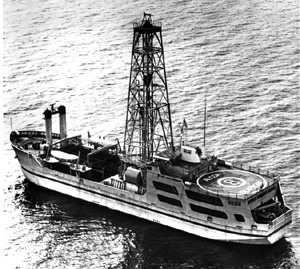

|  copyright - WHOI |
|
Alcoa Seaprobe, an all-aluminum vessel built specifically for deep ocean research and recovery, had a unique search pod enabling it to sweep the ocean floor and transmit data to the ship. The vessel could also core, drill, and sample mineral deposits down to 18,000 feet. The Woods Hole Oceanographic Institution used Alcoa in the 1970s to conduct tests of the ANGUS camera sled, and the Westinghouse side-scan sonar for pressure tests, and for underwater filming and photography.